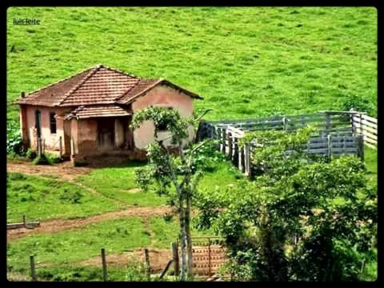

Desafios e Oportunidades para um Desenvolvimento Sustentável
A relação entre campo e cidade é vital para o desenvolvimento sustentável, com o campo fornecendo alimentos e as cidades servindo como centros de consumo. Essa interdependência enfrenta desafios, como a migração de jovens do campo e problemas ambientais ns áreas urbanas. Para fortalecer essa conexão, é essencial implementar políticas públicas que incentivem o desenvolvimento rural, promovendo a agricultura sustentavél e a produção local nas cidades.
